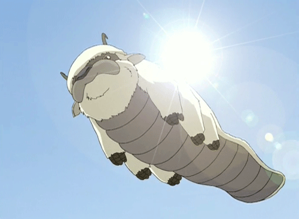
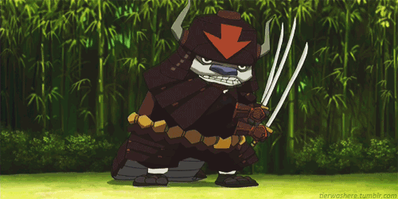
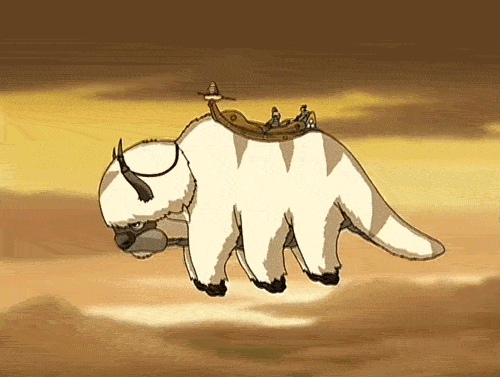

| Air Bending | |
|---|---|
|  | Appa has airbending abilities. He is able to use both his tail and mouth to channel airbender. He mainly used his ability to fly at extreme heights and avoid attacks. He is able to create powerful gusts of air by flickicking his tail and is able to hover in the air. |
| Strength | |
|  | Because Appa is a bison, he naturally has a great amount of brute strength and endurance. He was able to lift two Fire Nation tanks and destroyed a boar in a fight. He is able to toss his opponents far away. |
| Stamina | |
|  | While Appa may be huge, he has an amazing endurance. He is able to carrying all of Team Avatar across the seas throughout their journey. He sometimes takes breaks while flying, but he is also able to fly for days without stopping. An exampple of this would be when they were on the run from Azula and her squad, he flew relentlessly to escape from teh enemy. |